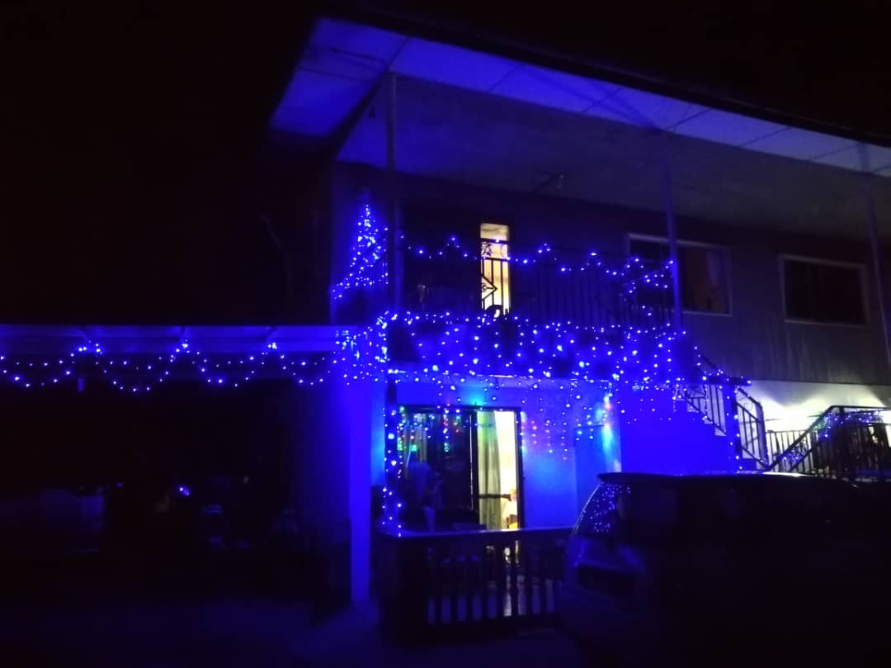

My Christmas Holiday
One of my best experince is Christmas Day last year.Christmas is the season of joy and thanksgiving. Every year my family comes home to enjoy the holidays with all our family members. One of the first family members to come home was my sister and her family. My sister works as a teacher at Tenom. Thus, her husband and kids live there as well. My brother-in-law, Bryan, farms and sells bananas for a living. My nieces, Gianna and Gwen go to school there while Julian, the youngest is cared by their father until my sister gets of work. The next family member to come back home is my brother Joven, who works in Sandakan. He came five days before Christmas due to work problems. My other brothers, Joy and Leo live near home. Both my brothers work as postmen at Kota Kinabalau. My brother Leo's family made their home right behind ours. My sister- in-law, Molly is a house wife and comes often to help around the house. My niece, Marylene, got a job in a pet shop while continuing her studies at UiTM through online. My other niece, Marygrace and nephew, Elden are at home since it's the school holidays. They also help around the house such as cleanning the rooms and decorating the house.
We start of the holidays by cleanning the house. The adults (does not include me) cleaned the inside of the house while the rest of us went to clean the outside part. We divided tasks among 6 people (does not include Julian, he is a baby). Marylene and I went to swep the outside patio while Gianna and Marygrace raked the dead leaves near the fruit trees. Elden and Gwen went around the house to pick up any trash they found. After lunch, we went to set up the Christmas tree and the Christmas decorations. For this year, we set up two Christmas trees. One was placed inside and the other, outside. My brothers along with my brother-in-law went to set up the christmas lights. It was beautiful when night time came.
We then went Christmas shopping we shop for Christmas cloths and gifts. Of course we also followed the SOP since the pandemic is still going on. It tooks us at least a few days to finish the shopping since we only went out in small numbers. We also bought lots of food to cook for Christmas. On the 24th of December, it was Christmas Eve. My mom, sister, sister-in-law and my brother Joven were busy in the kitchen preparing Christmas dinner. My brother went to prep the meat for the barbecue while my sister and Molly cut up the meat, onions and other vegetables for the meals. I however was given the task of babysitting the little ones. But, I am not complaining since I get to watch movies with the litte ones. We watch many movies such as Encanto, Frozen, Harry Potter and many more. Even the baby, Julian, was watching along. Well, he mostly playing in his playpen but I did let him sit on my lap for some of the movies. My brothers and Bryan went to get some firewood for our bonefire. My dad went with them but he was not allowed any heavy lifiting since his back was hurting. At night, I along with Marylene got the opportunity to try grilling the meat. It was a fun experince even thought we might have burn a chicken wing or two. We definitely feast like kings that night.
It was finally Christmas. Half of the family went to Chruch which includes me while the others stayed at home. It was the SOP rules since not many were allowed to attend Christmas Mass. After the mass, we all headed out to Mr.Ko's Studio to get our family picture taken. It has been years since our family picture was taken. Our family has new members now, so we went to get a new one taken. It was a bit diffcult to take the right one since Julian keeps running away from the camera everytime he sees the flash but nothing a stuff animal can't fix. After that, we headed home and enjoyed the day relaxing and watching movies. There was a fight on whether to watch action or Christmas movies thought but in the end, we seattled with disney until the kids went to bed. It was the best Christmas ever and I can't wait for next year's Christmas.